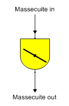
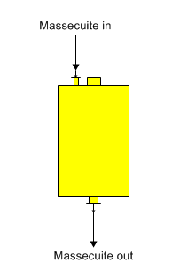

Both horizontal and vertical crystallizers are used to increase the crystal content of a massecuite by specifying an outlet temperature and supersaturation.
Horizontal Crystallizer The shape for a horizontal crystallizer is shown below.

Vertical Crystallizer The shape for a vertical crystallizer is shown below.

General Features Crystallizer stations are used to increase the crystal content of a material flow stream (massecuite) due to a reduction in the temperature and/or sucrose supersaturation of the massecuite that causes growth of sucrose crystals. A color rise may also occur in a crystallizer. The solubility equation coefficients for the input flow are used to find the resultant crystal content of the output flow from the station. A crystallizer station may be used at any point in the flow diagram where crystal growth is to be considered; for example, in a holding tank with a long residence time, etc.
Full crystallization occurs in a crystallizer station when the massecuite output flow from the crystallizer is saturated; that is, the supersaturation of the output flow is equal to 1.0. Normally, the massecuite flow out of a crystallizer will have some supersaturation and its temperature will be less than the temperature of the massecuite flow into the crystallizer. If the supersaturation of the massecuite isn’t known, and the values of the mother liquor percent dry substance (%DS) and purity can be measured, Sugars can calculate the supersaturation coefficient for the massecuite output flow by clicking the "Calculate" button next to the Supersaturation Coef. entry field when entering the crystallizer parameters. A small window will appear where the mother liquor values can be entered. After the values are entered, click on the "OK" button to calculate the supersaturation value and Sugars will enter it into the Supersaturation Coefficient field of the Crystallizer Properties window.